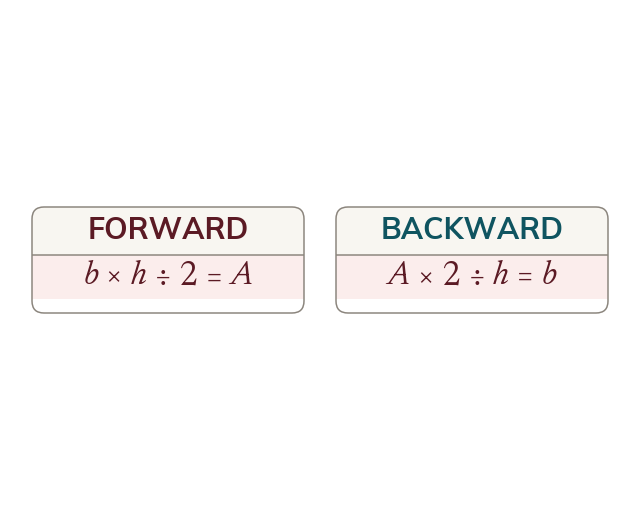

A formula read backwards
A known area is taken back through the formula in reverse. Each operation is undone by its inverse, in the opposite order.
An area formula is a chain of operations applied to the lengths of a shape, so a known area can be taken back through that chain in reverse to recover a length. The operations are undone in the opposite order to the one in which they were applied, and each is replaced by its inverse: multiplying becomes dividing, halving becomes doubling, and squaring becomes taking the square root. Nothing new is being learned about the shape here; what changes is only which quantity is known and which is wanted. The safest way to keep the order straight is to write the forward formula down first and then unwind it one step at a time.